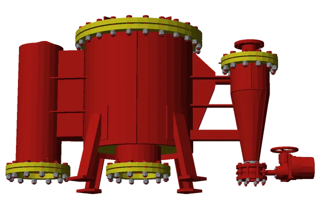
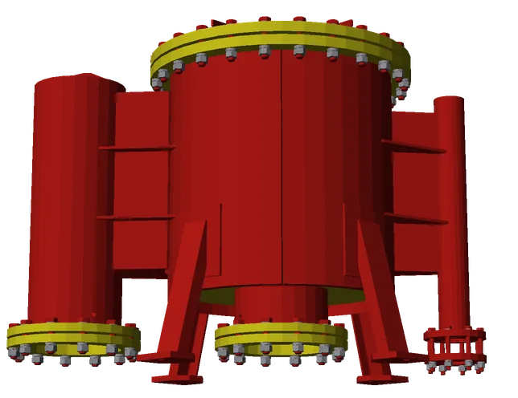

+7 (863) 301-00-45
пн–пт 9:00–18:00
Единственный в России производитель гидродинамических фильтров ТМ ФОГОД. Очистка воды, масла и СОЖ от механических примесей — серийные решения и изготовление по вашему ТЗ.


Если под ваши условия ничего не подошло — это не отказ. Изготовление под конкретное ТЗ у нас обычная практика.
Гидродинамические — собственная запатентованная разработка. Остальные пять закрывают задачи, где нужна другая физика очистки или другое энергоснабжение.
Полно- и неполнопоточные исполнения, фильтр-гидроциклон. Самоочистка без движущихся узлов.
Щётки с электроприводом. Управление по времени, по перепаду давления или вручную.
Пакет плотно сжатых полимерных дисков. При самопромывке диски разжимаются и поток смывает загрязнения.
Слой гранулированной загрузки: кварцевый песок, антрацит. Удаляют ил, ржавчину, водоросли.
Работают на энергии потока. Подвод электропитания на объекте не требуется.
Агрессивные среды, рукавные и корзинчатые. Материальное исполнение под среду заказчика.
Параметр, который заказчик считает в экономике объекта, а конкуренты обычно не публикуют.
Очистка идёт за счёт гидродинамики самого потока: движущихся узлов и механизмов в фильтре нет, промывочная вода и воздух не нужны. Шлам отводится периодически.
Неполнопоточное исполнение компактнее в обвязке, но до 10 % жидкости уходит на постоянный смыв.
Фильтр-гидроциклон идёт в составе ОВГД или как отдельный аппарат.
место под фоторендер продукта
Вода подаётся по касательной и создаёт вращающийся вихрь внутри корпуса.
Тяжёлые механические частицы отбрасываются центробежной силой к стенкам корпуса.
Частицы опускаются в шламовую камеру, очищенная вода поднимается и выходит через выходное отверстие.
Очистка воды оборотных циклов предприятий, нефтепродуктов, масел и СОЖ.
место под 2 фотографии производства
Оборудование изготавливается на собственном производстве и проходит заводские испытания перед отгрузкой. Каждая поставка комплектуется паспортом, руководством по эксплуатации и сертификатами.
Расчёт и изготовление по техническому заданию. Пришлите параметры — вернёмся с предложением и опросным листом.